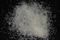

|
DOCUMENTATION_FORMAT: MINERAL
SAMPLE_ID: HS482.1B, HS482.2B, HS482.3B, HS482.4B, HS482.6
MINERAL_TYPE: Tectosilicate
MINERAL: Stilbite (Zeolite Group)
FORMULA: NaCa2Al5Si13O36*14H2O
FORMULA_HTML: NaCa2Al5Si13O36•14H2O
COLLECTION_LOCALITY: Nova Scotia
ORIGINAL_DONOR: Hunt and Salisbury Collection
CURRENT_SAMPLE_LOCATION: USGS Denver Spectroscopy Laboratory
ULTIMATE_SAMPLE_LOCATION: USGS Denver Spectroscopy Laboratory
SAMPLE_DESCRIPTION:
A spectrum for this sample was published in: Hunt, G.R., J.W. Salisbury, and C.J. Lenhoff, 1973, Visible and near-infrared spectra of minerals and rocks: VI. Additional silicates. Modern Geology, v. 4, p. 85-106.
With the note: "The major water features occur at 0.985, 1.17, 1.44, 1.92µm and the bands are generally broad and not well resolved. The reflectivities for sizes I through IV are 98, 91, 79, and 62% at 1.1µm.
Grain size fractions are indicated by the extension after the sample number:
.1B = <5 µm
.2B = <74 µm
.3B = 74-250 µm
.4B = 250-1200 µm
.6 = cut slab
IMAGE_OF_SAMPLE:

END_SAMPLE_DESCRIPTION.
XRD_ANALYSIS:
40 kV- 30 mA, 6.5-9.5 keV
File: stilb482.mdi
References: Tschernich (1992); PDF2 #24-0894, 25-0124, 26-584, 29-1185, 41-1356,
41-1357, 44-1479; Akizuki and Konno (1985)
Found: Barrierite, stellerite, or stilbite
Comments: Sharp peaks but poorly resolved alpha1-alpha2 reflections are consistent
with some variation in composition or structural order. The pattern was indexed by
comparison with PDF2 #26-0584 (stilbite, calculated by D. Smith and others, 1970).
A moderately weak shoulder on the larger d-spacing side of the (020) is the only
unexplained feature. Line-base search-match returns barrierite, stellerite, and
stibite; profile-based search-match returns only barrierite. These three species
are so closely related that they might all better be considered stilbite
(Tschernich, 1992). Visual comparison of overlaid patterns indicates that
barrierite (29-1185), stellerite (25-0124), and stilbite (44-1479) are each an
excellent match for HS-482. Another stilbite (24-0894) and structurally related
heulandite and brewsterite are poor matches and were eliminated as possibilities.
END_XRD_ANALYSIS.
COMPOSITIONAL_ANALYSIS_TYPE: # XRF, EPMA, ICP(Trace), WChem
COMPOSITION_TRACE:
COMPOSITION_DISCUSSION:
END_COMPOSITION_DISCUSSION.
MICROSCOPIC_EXAMINATION:
END_MICROSCOPIC_EXAMINATION.
SPECTROSCOPIC_DISCUSSION:
END_SPECTROSCOPIC_DISCUSSION.
SPECTRAL_PURITY: 1b2_3_4_ # HS482.1B # 1= 0.2-3, 2= 1.5-6, 3= 6-25, 4= 20-150 microns
SPECTRAL_PURITY: 1b2_3_4_ # HS482.2B # 1= 0.2-3, 2= 1.5-6, 3= 6-25, 4= 20-150 microns
SPECTRAL_PURITY: 1b2b3b4u # HS482.3B # 1= 0.2-3, 2= 1.5-6, 3= 6-25, 4= 20-150 microns
SPECTRAL_PURITY: 1b2_3_4_ # HS482.4B # 1= 0.2-3, 2= 1.5-6, 3= 6-25, 4= 20-150 microns
SPECTRAL_PURITY: 1b2_3_4_ # HS482.6 # 1= 0.2-3, 2= 1.5-6, 3= 6-25, 4= 20-150 microns
{kind=link}